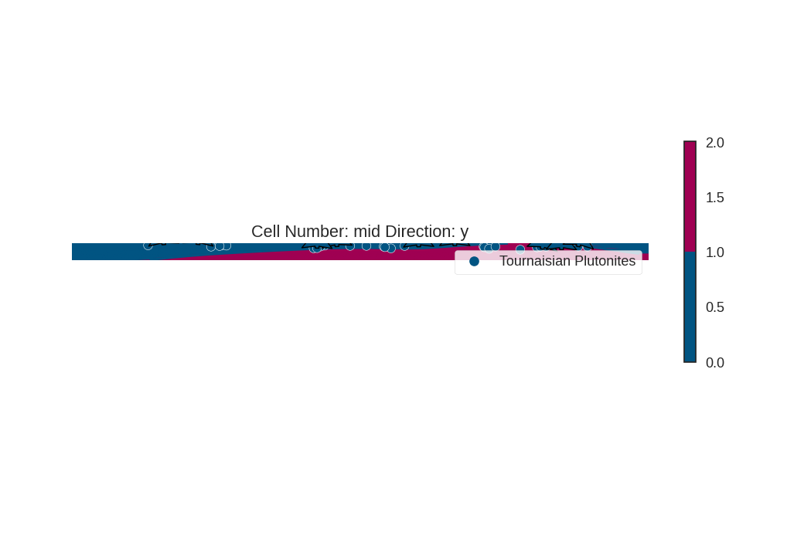
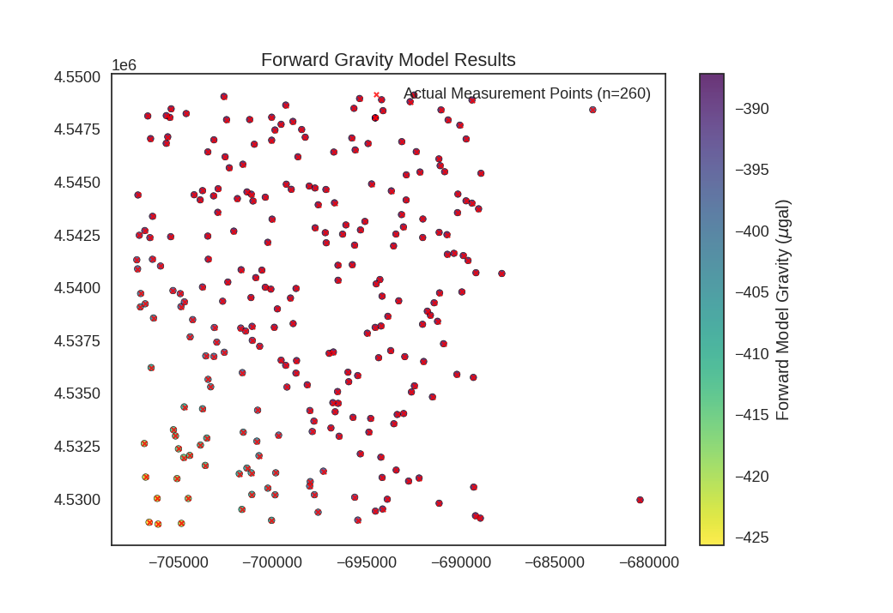
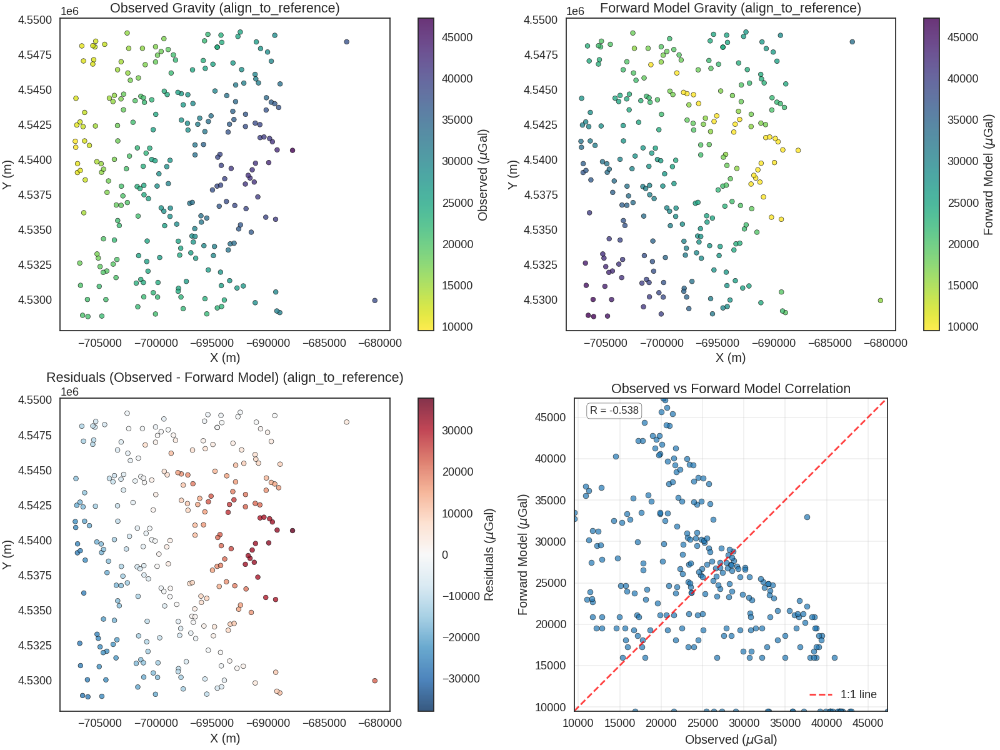
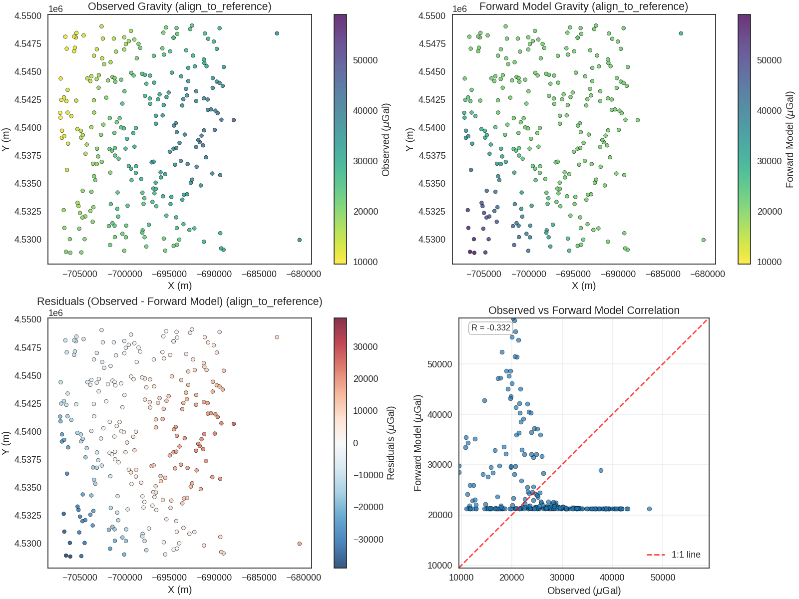
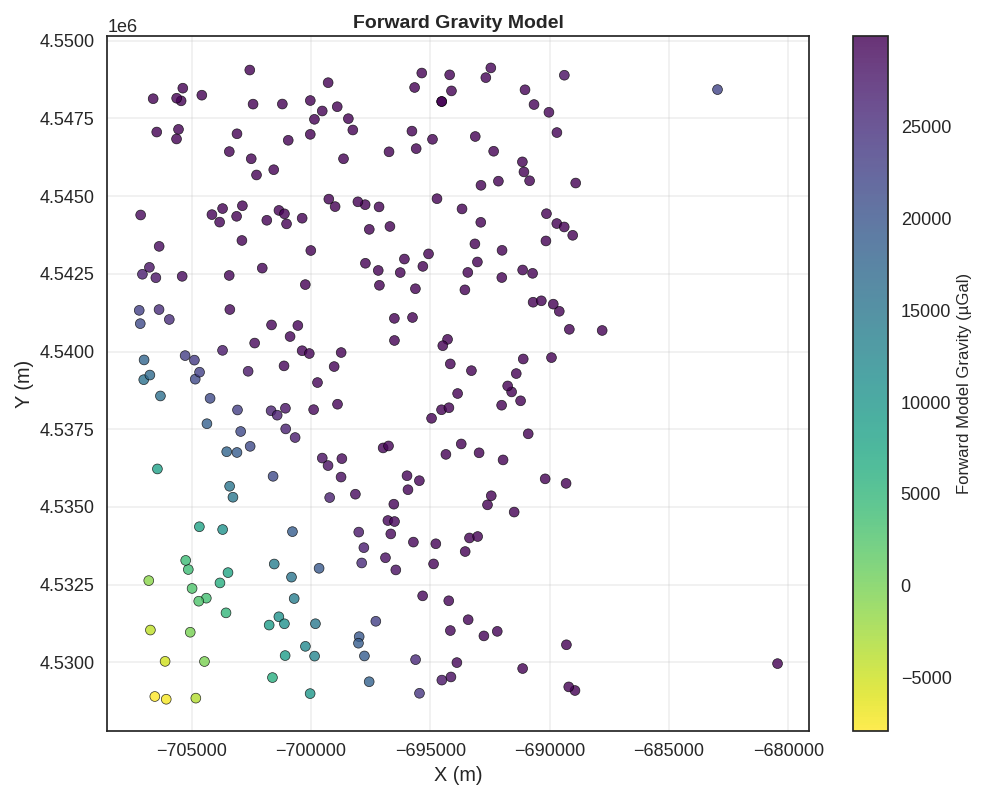
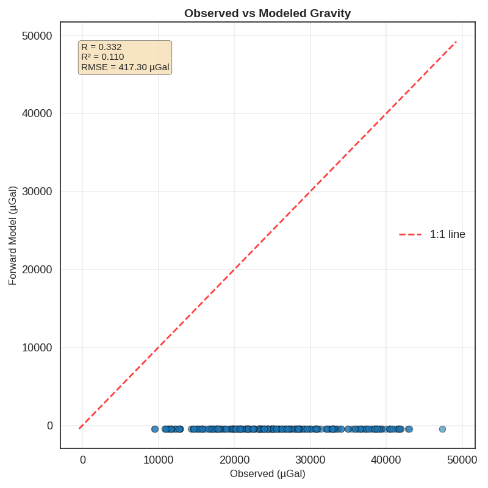
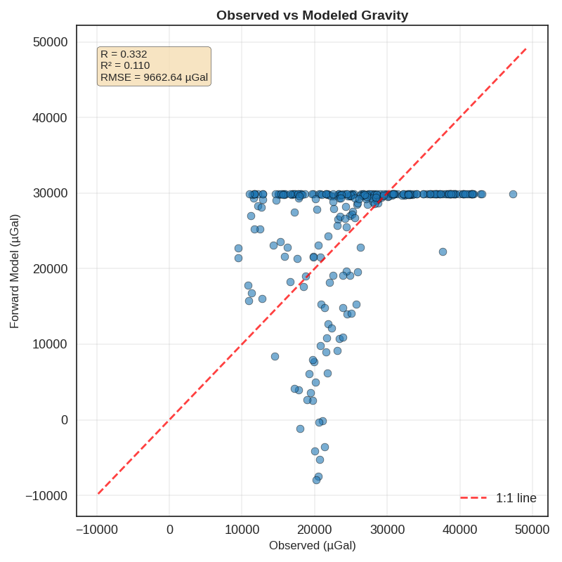

Note
Go to the end to download the full example code.
Forward Gravity Modeling - Tharsis Region¶
This example demonstrates forward gravity modeling using a 3D geological model. We compute the gravity response of the geological structure at real measurement locations.
Import Libraries¶
import numpy as np
import torch
from matplotlib import pyplot as plt
import gempy as gp
import geopandas as gpd
from mineye.GeoModel.geophysics import align_forward_to_observed
from mineye.GeoModel.model_one.probabilistic_model import normalize
# Set random seed for reproducibility
np.random.seed(1234)
Setting Backend To: AvailableBackends.PYTORCH
Import paths configuration
from mineye.config import paths
Define Model Extent and Resolution¶
The model covers the Tharsis mining district
min_x = -707521
max_x = -675558
min_y = 4526832
max_y = 4551949
max_z = 505
model_depth = -500
extent = [min_x, max_x, min_y, max_y, model_depth, max_z]
# Model resolution: use octree with refinement level 5
resolution = None # Using octrees instead of regular grid
refinement = 5
Get Data Paths¶
Load paths to structural and geophysical data
mod_or_path = paths.get_orientations_path()
mod_pts_path = paths.get_points_path()
gravity_data_path = paths.get_gravity_data_path()
print(f"Orientations: {mod_or_path}")
print(f"Points: {mod_pts_path}")
print(f"Gravity data: {gravity_data_path}")
Orientations: /home/leguark/PycharmProjects/Mineye-Terranigma/examples/Data/Output_Data/Simple-Models/temp_inputs/orientations_mod.csv
Points: /home/leguark/PycharmProjects/Mineye-Terranigma/examples/Data/Output_Data/Simple-Models/temp_inputs/points_mod.csv
Gravity data: /home/leguark/PycharmProjects/Mineye-Terranigma/examples/Data/Input_Data/Geophysical_Cleaned_Data/cleaned_gravity_data.geojson
Create GemPy Geological Model¶
Build the model structure with imported structural data
simple_geo_model = gp.create_geomodel(
project_name='gravity_model',
extent=extent,
refinement=refinement,
resolution=resolution,
importer_helper=gp.data.ImporterHelper(
path_to_orientations=mod_or_path,
path_to_surface_points=mod_pts_path,
)
)
Map Geological Units¶
Define the stratigraphic stack
gp.map_stack_to_surfaces(
gempy_model=simple_geo_model,
mapping_object={
"Tournaisian_Plutonites": ["Tournaisian Plutonites"],
}
)
Load Gravity Observations¶
Read actual gravity measurements from the field
gravity_data = gpd.read_file(gravity_data_path)
observed_gravity = gravity_data['VALU_BOU267'].values # in mGal
print(f"Number of gravity observations: {len(observed_gravity)}")
print(f"Gravity range: {observed_gravity.min():.2f} to {observed_gravity.max():.2f} mGal")
Number of gravity observations: 260
Gravity range: 9.51 to 47.32 mGal
Set Up Gravity Measurement Locations¶
Create measurement grid at actual device locations
Using 260 actual measurement points
Configure Centered Grid for Gravity Computation¶
Set up centered grid around each measurement point
Active grids: GridTypes.OCTREE|CENTERED|NONE
CenteredGrid(centers=array([[-704570.24986708, 4548244.44414697, 0. ],
[-704382.53236132, 4532066.04358394, 0. ],
[-690136.4724824 , 4544432.98054552, 0. ],
[-707002.14761004, 4539093.63743575, 0. ],
[-704699.53653821, 4531968.58617747, 0. ],
[-700950.96131678, 4546793.53316535, 0. ],
[-694189.65141922, 4548898.51589742, 0. ],
[-704846.42954987, 4539110.03786957, 0. ],
[-703528.05797201, 4536776.3870667 , 0. ],
[-697783.81633134, 4533690.43399615, 0. ],
[-700701.90939908, 4532053.42842816, 0. ],
[-689387.22332329, 4548886.66579413, 0. ],
[-706356.82611551, 4543381.27949745, 0. ],
[-699725.7913837 , 4539001.41911386, 0. ],
[-704880.76103593, 4539722.44379962, 0. ],
[-693539.73514154, 4533565.75191503, 0. ],
[-689703.77835309, 4544115.49132514, 0. ],
[-695657.88529586, 4548492.06016118, 0. ],
[-701340.43666623, 4544538.11647535, 0. ],
[-703113.49540005, 4544348.30865632, 0. ],
[-696260.28828948, 4542539.04411041, 0. ],
[-705269.75104386, 4539868.28697846, 0. ],
[-702942.61676308, 4537427.18728719, 0. ],
[-701668.40123045, 4538093.5417471 , 0. ],
[-696778.07863169, 4534563.24256096, 0. ],
[-690189.58587604, 4535904.0438323 , 0. ],
[-694278.01439706, 4540390.13596727, 0. ],
[-705932.22497261, 4541030.10467919, 0. ],
[-694347.58951657, 4536690.92548209, 0. ],
[-694530.80672662, 4538125.85458318, 0. ],
[-706304.30027099, 4538569.75392141, 0. ],
[-699847.47441095, 4530202.2711381 , 0. ],
[-700873.49686209, 4540481.10787182, 0. ],
[-695459.41443812, 4535844.89301689, 0. ],
[-707148.4887795 , 4540896.40251623, 0. ],
[-697998.06389421, 4534191.07476687, 0. ],
[-691595.18818509, 4538700.27101757, 0. ],
[-706430.33734245, 4536222.729729 , 0. ],
[-699279.78891429, 4548646.73290409, 0. ],
[-700033.658081 , 4528996.18227888, 0. ],
[-705136.85138448, 4532988.1125985 , 0. ],
[-701343.7014084 , 4531466.97793333, 0. ],
[-694948.02944618, 4537851.47846402, 0. ],
[-702561.88529242, 4549053.3376305 , 0. ],
[-693552.41750856, 4541982.66026483, 0. ],
[-699527.19558862, 4547735.80903946, 0. ],
[-701848.42285282, 4544220.75518659, 0. ],
[-701110.47954435, 4544428.29332502, 0. ],
[-697729.20710813, 4544722.50145008, 0. ],
[-697146.94815309, 4544651.57758211, 0. ],
[-702279.94101085, 4545678.18325806, 0. ],
[-702500.43356688, 4546199.36831356, 0. ],
[-701558.23536429, 4545847.14893239, 0. ],
[-702871.59134059, 4544687.98499131, 0. ],
[-703700.81098756, 4544597.56615932, 0. ],
[-704147.38331019, 4544402.78235669, 0. ],
[-707131.68857475, 4544390.95653287, 0. ],
[-706458.74372509, 4547058.90588169, 0. ],
[-705366.72314986, 4548469.71541658, 0. ],
[-705436.91099987, 4548062.41839713, 0. ],
[-705547.07893248, 4547144.91490476, 0. ],
[-692878.52088754, 4545345.66366485, 0. ],
[-693672.24965566, 4544586.21239792, 0. ],
[-694720.65304313, 4544915.12718891, 0. ],
[-690842.08756099, 4545492.06550759, 0. ],
[-691144.54917451, 4546099.48410509, 0. ],
[-688911.82735255, 4545418.76949646, 0. ],
[-692466.06604769, 4549121.98978402, 0. ],
[-692675.20755951, 4548808.91576711, 0. ],
[-694114.99107866, 4548382.09432244, 0. ],
[-690032.79740524, 4547694.52712426, 0. ],
[-690656.63715559, 4547943.35410694, 0. ],
[-695358.04647964, 4548956.82044653, 0. ],
[-693118.14696421, 4546915.61042547, 0. ],
[-691034.22083437, 4548417.62758332, 0. ],
[-701197.86219535, 4547959.70822538, 0. ],
[-695771.04715357, 4547088.53711372, 0. ],
[-695592.35978279, 4546525.09900636, 0. ],
[-694909.12732201, 4546825.49563904, 0. ],
[-694523.99375679, 4548040.48845199, 0. ],
[-692347.60157262, 4546441.11859162, 0. ],
[-698635.86231412, 4546199.00621817, 0. ],
[-699251.24929839, 4544901.13563421, 0. ],
[-700027.78585448, 4546984.76850401, 0. ],
[-699853.91907011, 4547467.97469452, 0. ],
[-698898.97131215, 4547873.41440277, 0. ],
[-698433.2116758 , 4547488.84404426, 0. ],
[-698246.16620834, 4547124.92612655, 0. ],
[-698987.68654978, 4544660.52117282, 0. ],
[-698034.30917751, 4544814.54348808, 0. ],
[-703419.46537656, 4546430.54257178, 0. ],
[-703097.29855282, 4547002.79572683, 0. ],
[-702423.40210923, 4547956.81705048, 0. ],
[-700026.69725194, 4548072.19712776, 0. ],
[-703474.12458896, 4532887.7312197 , 0. ],
[-703810.66585574, 4532556.46470808, 0. ],
[-704673.24662274, 4534363.0456991 , 0. ],
[-703698.42251713, 4534273.60186525, 0. ],
[-705245.63815661, 4533280.7219314 , 0. ],
[-702630.88659027, 4539363.92902962, 0. ],
[-703702.55587673, 4540037.08390116, 0. ],
[-706361.4992164 , 4541348.20314748, 0. ],
[-704223.67092922, 4538493.31829803, 0. ],
[-704356.37876873, 4537677.27046708, 0. ],
[-704665.01247886, 4539334.58278178, 0. ],
[-706746.11239164, 4539242.29468153, 0. ],
[-707058.64669513, 4542484.76656325, 0. ],
[-706766.00399363, 4542707.08003892, 0. ],
[-703396.64541143, 4541350.21234106, 0. ],
[-706495.2178215 , 4542373.12309047, 0. ],
[-702357.30149999, 4540271.31185934, 0. ],
[-701650.51242413, 4540854.29318949, 0. ],
[-702891.56092997, 4543571.07057342, 0. ],
[-707191.49748101, 4541323.45188155, 0. ],
[-706988.19588254, 4539729.32137543, 0. ],
[-702039.30893243, 4542681.8347075 , 0. ],
[-703405.54716938, 4535665.38556894, 0. ],
[-703266.9093116 , 4535312.91853802, 0. ],
[-700236.26351608, 4542152.12812771, 0. ],
[-703098.06443523, 4536752.3893394 , 0. ],
[-700548.76363513, 4540834.94527984, 0. ],
[-701069.08788512, 4538174.33377539, 0. ],
[-702545.84982516, 4536949.46102032, 0. ],
[-701127.01557852, 4539537.68417828, 0. ],
[-701413.47442146, 4537951.71435821, 0. ],
[-701057.1669182 , 4537510.50236729, 0. ],
[-700774.76423518, 4534206.17894973, 0. ],
[-699526.04965556, 4536572.01998759, 0. ],
[-698705.00188736, 4536553.99448347, 0. ],
[-698738.61132779, 4535960.90348689, 0. ],
[-698138.89062063, 4535410.35051641, 0. ],
[-700814.35383024, 4532742.50977263, 0. ],
[-701536.97573848, 4533164.24543296, 0. ],
[-695709.21517765, 4533869.32382116, 0. ],
[-696976.39341613, 4536898.49771136, 0. ],
[-699658.44070864, 4533026.53474742, 0. ],
[-696528.74804074, 4535089.01026027, 0. ],
[-696655.90731212, 4534132.84213016, 0. ],
[-695936.54873977, 4535554.51255691, 0. ],
[-694863.55901825, 4533167.58628089, 0. ],
[-695976.08013545, 4536004.33777941, 0. ],
[-696879.19145567, 4533366.00488239, 0. ],
[-696445.45921714, 4532974.40432503, 0. ],
[-697873.96947401, 4533198.16120133, 0. ],
[-694769.80339433, 4533815.82325936, 0. ],
[-694221.24452652, 4538191.11315424, 0. ],
[-693857.00013921, 4538648.7267923 , 0. ],
[-693360.40887111, 4534002.80230215, 0. ],
[-693017.49292759, 4534048.87480443, 0. ],
[-693705.28857102, 4537026.28493056, 0. ],
[-692957.10914448, 4536741.62464528, 0. ],
[-691953.38660152, 4536512.62784209, 0. ],
[-694163.74847927, 4539601.64021984, 0. ],
[-693028.81331842, 4542879.68446094, 0. ],
[-693133.42730854, 4543462.03019846, 0. ],
[-697132.62908901, 4542129.34665211, 0. ],
[-697180.78549477, 4542607.0472654 , 0. ],
[-697719.24216226, 4542838.02734363, 0. ],
[-690694.92534506, 4541585.44615389, 0. ],
[-690350.44150586, 4541630.25557848, 0. ],
[-689598.97851544, 4541293.35240538, 0. ],
[-689177.71438932, 4540713.05256805, 0. ],
[-692605.68299727, 4535068.05932206, 0. ],
[-692447.82643207, 4535359.93364545, 0. ],
[-689925.86846736, 4539803.63335059, 0. ],
[-691488.42312198, 4534835.36543722, 0. ],
[-691400.71719711, 4539290.16855225, 0. ],
[-691219.303393 , 4538414.0191427 , 0. ],
[-690900.32022166, 4537352.52281954, 0. ],
[-691760.8244483 , 4538892.34014133, 0. ],
[-692013.57908457, 4538272.55865777, 0. ],
[-693278.78772497, 4539383.80920215, 0. ],
[-691108.6668279 , 4539759.19758837, 0. ],
[-695312.40653945, 4542738.2459276 , 0. ],
[-696085.90121924, 4542973.80773645, 0. ],
[-696506.01679654, 4541065.74413793, 0. ],
[-689036.65019647, 4543737.52654683, 0. ],
[-696502.8411063 , 4540354.49548519, 0. ],
[-691995.89391311, 4543254.02680697, 0. ],
[-695746.81027394, 4541093.51012951, 0. ],
[-695624.72544536, 4542018.4251667 , 0. ],
[-692006.34323639, 4542378.54722423, 0. ],
[-691133.13863778, 4542621.71242467, 0. ],
[-690716.49557232, 4542514.29498803, 0. ],
[-695074.93975426, 4543139.68622656, 0. ],
[-699027.89611701, 4539515.37289281, 0. ],
[-701022.09773344, 4544105.4338232 , 0. ],
[-700368.87131864, 4540024.72289765, 0. ],
[-700069.02620731, 4539935.13935897, 0. ],
[-698734.31438763, 4539966.92234925, 0. ],
[-697556.32596059, 4543928.16983754, 0. ],
[-696691.84132481, 4544021.8605408 , 0. ],
[-700005.63291632, 4543248.427023 , 0. ],
[-705393.05712697, 4542417.71750498, 0. ],
[-703824.34931502, 4544161.89080804, 0. ],
[-689313.75742799, 4535757.87160912, 0. ],
[-689391.84552247, 4544005.68301675, 0. ],
[-690158.38366982, 4543555.73879237, 0. ],
[-698887.19241135, 4538304.5069895 , 0. ],
[-699887.21327075, 4538129.85749739, 0. ],
[-706792.15611903, 4532631.09161122, 0. ],
[-692886.93617681, 4544155.5016168 , 0. ],
[-692149.12489832, 4545478.71524173, 0. ],
[-696750.1365093 , 4536962.17791224, 0. ],
[-696729.66753301, 4546423.19841714, 0. ],
[-680457.49902116, 4529960.92458436, 0. ],
[-705624.39826725, 4548147.0565838 , 0. ],
[-703076.85222025, 4538119.61970237, 0. ],
[-692756.56790738, 4530852.29730131, 0. ],
[-688941.53885159, 4529095.83225476, 0. ],
[-701749.40178779, 4531200.52117439, 0. ],
[-705629.59827467, 4546836.18755086, 0. ],
[-700662.44270029, 4537232.9027125 , 0. ],
[-694478.0798911 , 4540186.65169614, 0. ],
[-689850.51051508, 4541523.13617614, 0. ],
[-694523.99375679, 4548040.48845199, 0. ],
[-706608.12955532, 4548130.76550664, 0. ],
[-691079.20840052, 4545776.95573851, 0. ],
[-706061.10514375, 4528815.13464428, 0. ],
[-706724.22097719, 4531041.01420807, 0. ],
[-704821.30555819, 4528850.56820019, 0. ],
[-701080.48124779, 4530219.59965639, 0. ],
[-697759.99913426, 4530207.1357154 , 0. ],
[-697560.9416204 , 4529378.07978783, 0. ],
[-695454.34384941, 4529006.95443884, 0. ],
[-694517.9195195 , 4529430.86265254, 0. ],
[-693415.27782586, 4531373.02364906, 0. ],
[-694228.48823523, 4531982.13272386, 0. ],
[-695617.77795432, 4530088.07640873, 0. ],
[-694136.67074351, 4529531.47852188, 0. ],
[-693887.65833433, 4529993.58307241, 0. ],
[-691133.79624357, 4529802.28694482, 0. ],
[-694161.4863376 , 4531024.13533694, 0. ],
[-689202.79320461, 4529212.30669748, 0. ],
[-689300.43402256, 4530566.90616717, 0. ],
[-701111.26194587, 4531242.08714209, 0. ],
[-701611.92980549, 4529511.73491421, 0. ],
[-699811.92988538, 4531243.56771176, 0. ],
[-700231.84745044, 4530516.82438978, 0. ],
[-703557.16546477, 4531593.72991249, 0. ],
[-705055.27448741, 4530970.25809214, 0. ],
[-706108.13846225, 4530033.21429594, 0. ],
[-704459.35807063, 4530028.77819813, 0. ],
[-704977.7589175 , 4532379.28773262, 0. ],
[-695321.48820441, 4532140.5645316 , 0. ],
[-697282.73869209, 4531322.1578646 , 0. ],
[-697979.60211997, 4530827.77200875, 0. ],
[-692196.40324904, 4530998.30395337, 0. ],
[-703422.7166823 , 4542446.22742803, 0. ],
[-706538.45692982, 4528903.1631414 , 0. ],
[-699215.40699524, 4535301.57505909, 0. ],
[-689698.50635551, 4547042.39848429, 0. ],
[-699284.12968756, 4536330.83715183, 0. ],
[-696499.33902935, 4534531.15459867, 0. ],
[-682972.38968699, 4548424.4631201 , 0. ],
[-687802.64357389, 4540676.33579163, 0. ],
[-693430.25335438, 4542543.64103815, 0. ],
[-701585.54515975, 4535985.98870548, 0. ],
[-698010.14738312, 4530617.67880425, 0. ],
[-700367.86757379, 4544287.12204097, 0. ]]), resolution=array([10, 10, 15]), radius=array([5000, 5000, 5000]), kernel_grid_centers=array([[-5000. , -5000. , -300. ],
[-5000. , -5000. , -360. ],
[-5000. , -5000. , -383.36972966],
...,
[ 5000. , 5000. , -3407.68480754],
[ 5000. , 5000. , -4618.11403801],
[ 5000. , 5000. , -6300. ]], shape=(1936, 3)), left_voxel_edges=array([[1709.43058496, 1709.43058496, -30. ],
[1709.43058496, 1709.43058496, -30. ],
[1709.43058496, 1709.43058496, -11.68486483],
...,
[1709.43058496, 1709.43058496, -435.56428767],
[1709.43058496, 1709.43058496, -605.21461523],
[1709.43058496, 1709.43058496, -840.942981 ]], shape=(1936, 3)), right_voxel_edges=array([[1709.43058496, 1709.43058496, -30. ],
[1709.43058496, 1709.43058496, -11.68486483],
[1709.43058496, 1709.43058496, -16.23606704],
...,
[1709.43058496, 1709.43058496, -605.21461523],
[1709.43058496, 1709.43058496, -840.942981 ],
[1709.43058496, 1709.43058496, -840.942981 ]], shape=(1936, 3)))
Calculate Gravity Gradient¶
Compute the gravity gradient (tz component) for the centered grid
gravity_gradient = gp.calculate_gravity_gradient(simple_geo_model.grid.centered_grid)
print(f"Gravity gradient tensor shape: {gravity_gradient.shape}")
Gravity gradient tensor shape: (1936,)
Set Density Values¶
Define densities for geological units
density_plutonites = 2.9 # kg/m³
density_sedimentary_host = 2.3 # kg/m³
simple_geo_model.geophysics_input = gp.data.GeophysicsInput(
tz=gravity_gradient,
densities=np.array([density_plutonites, density_sedimentary_host])
)
print(f"Plutonite density: {density_plutonites} g/cm³")
print(f"Sedimentary host density: {density_sedimentary_host} g/cm³")
Plutonite density: 2.9 g/cm³
Sedimentary host density: 2.3 g/cm³
Compute Forward Gravity Model¶
Run the interpolation and gravity computation
simple_geo_model.interpolation_options.mesh_extraction = False
sol = gp.compute_model(simple_geo_model)
print("✓ Forward gravity model computed successfully")
Setting Backend To: AvailableBackends.PYTORCH
✓ Forward gravity model computed successfully
Extract Gravity Results¶
Get the computed gravity response
observed_gravity_ugal= observed_gravity * 1000
norm_params = normalize(
sol.gravity,
observed_gravity_ugal,
method="align_to_reference",
extrapolation_buffer=0.3
)
grav = align_forward_to_observed(sol.gravity, norm_params)
print(f"\nComputed gravity values:")
print(f" Shape: {grav.shape}")
print(f" Range: {grav.min():.2f} to {grav.max():.2f} mGal")
print(f" Mean: {grav.mean():.2f} mGal")
Computing align_to_reference alignment parameters...
Alignment params: {'method': 'align_to_reference', 'reference_mean': 25587.184615384616, 'reference_std': 8369.297471927344, 'baseline_forward_mean': -391.5950547609746, 'baseline_forward_std': 8.516222234489366}
Computed gravity values:
Shape: torch.Size([260])
Range: -7913.90 to 29927.37 mGal
Mean: 25587.18 mGal
Compare with Observations¶
Calculate residuals between observed and computed gravity
Gravity residuals:
Mean: -0.00 mGal
Std: 9662.64 mGal
RMS: 9662.64 mGal
Visualize the Model¶
Create 2D and 3D visualizations of the geological model
import gempy_viewer as gpv
gpv.plot_2d(simple_geo_model)
gpv.plot_3d(simple_geo_model, ve=5, image=True)


<gempy_viewer.modules.plot_3d.vista.GemPyToVista object at 0x7f78c6a7cd70>
Visualize Gravity Results¶
Plot forward gravity and comparison with observations
from mineye.GeoModel.plotting.probabilistic_analysis import _plot_fw_gravity, plot_comparison
_plot_fw_gravity(grav, gravity_data, xy_ravel)
plot_comparison(observed_gravity, grav, xy_ravel)


Plotting 260 actual measurement locations
=== Observed vs Predicted Comparison ===
Computing align_to_reference alignment parameters...
Alignment params: {'method': 'align_to_reference', 'reference_mean': 25587.184615384616, 'reference_std': 8369.297471927344, 'baseline_forward_mean': -25587.18461538463, 'baseline_forward_std': 8353.187163491926}
Visualize Forward Model Results¶
grav_forward = grav
print(f"✓ Forward model computed")
print(f" Gravity range: [{grav_forward.min():.2f}, {grav_forward.max():.2f}] µGal")
fig, ax = plt.subplots(figsize=(10, 8))
scatter = ax.scatter(
xy_ravel[:, 0], xy_ravel[:, 1],
c=grav_forward, s=50,
cmap='viridis_r', alpha=0.8,
edgecolors='black', linewidth=0.5
)
cbar = plt.colorbar(scatter, ax=ax)
cbar.set_label(r'Forward Model Gravity (µGal)', fontsize=12)
ax.set_title('Forward Gravity Model', fontsize=14, fontweight='bold')
ax.set_xlabel('X (m)')
ax.set_ylabel('Y (m)')
ax.grid(True, alpha=0.3)
plt.tight_layout()
plt.show()

✓ Forward model computed
Gravity range: [-7913.90, 29927.37] µGal
Compare with Observed Gravity¶
# Convert observed from mGal to µGal
observed_ugal = observed_gravity_ugal
# Create comparison plot
fig, axes = plt.subplots(1, 3, figsize=(18, 5))
# Observed
sc1 = axes[0].scatter(
xy_ravel[:, 0], xy_ravel[:, 1],
c=observed_ugal, s=50, cmap='viridis_r',
edgecolors='black', linewidth=0.5
)
axes[0].set_title('Observed Gravity')
axes[0].set_xlabel('X (m)')
axes[0].set_ylabel('Y (m)')
plt.colorbar(sc1, ax=axes[0], label='µGal')
# Forward model
sc2 = axes[1].scatter(
xy_ravel[:, 0], xy_ravel[:, 1],
c=grav_forward, s=50, cmap='viridis_r',
edgecolors='black', linewidth=0.5
)
axes[1].set_title('Forward Model')
axes[1].set_xlabel('X (m)')
plt.colorbar(sc2, ax=axes[1], label='µGal')
# Residuals
sc3 = axes[2].scatter(
xy_ravel[:, 0], xy_ravel[:, 1],
c=residuals, s=50, cmap='RdBu_r',
edgecolors='black', linewidth=0.5
)
axes[2].set_title('Residuals (Obs - Model)')
axes[2].set_xlabel('X (m)')
plt.colorbar(sc3, ax=axes[2], label='µGal')
plt.tight_layout()
plt.show()

Correlation Analysis¶
fig, ax = plt.subplots(figsize=(8, 8))
ax.scatter(observed_ugal, grav_forward, alpha=0.6, s=60,
edgecolors='black', linewidth=0.5)
# 1:1 line
lims = [
min(ax.get_xlim()[0], ax.get_ylim()[0]),
max(ax.get_xlim()[1], ax.get_ylim()[1])
]
ax.plot(lims, lims, 'r--', alpha=0.75, linewidth=2, label='1:1 line')
# Calculate statistics
correlation = np.corrcoef(observed_ugal, grav_forward)[0, 1]
rmse = np.sqrt(np.mean(residuals**2))
ax.set_xlabel('Observed (µGal)', fontsize=12)
ax.set_ylabel('Forward Model (µGal)', fontsize=12)
ax.set_title('Observed vs Modeled Gravity', fontsize=14, fontweight='bold')
ax.grid(True, alpha=0.3)
ax.legend()
# Add statistics text box
textstr = f'R = {correlation:.3f}\nR² = {correlation**2:.3f}\nRMSE = {rmse:.2f} µGal'
ax.text(0.05, 0.95, textstr, transform=ax.transAxes,
verticalalignment='top',
bbox=dict(boxstyle='round', facecolor='wheat', alpha=0.8),
fontsize=11)
plt.tight_layout()
plt.show()

Print Summary Statistics¶
print("\n" + "="*50)
print("GRAVITY COMPARISON STATISTICS")
print("="*50)
print(f"Number of measurements: {len(observed_ugal)}")
print(f"\nObserved gravity:")
print(f" Mean: {observed_ugal.mean():.2f} µGal")
print(f" Std: {observed_ugal.std():.2f} µGal")
print(f" Range: [{observed_ugal.min():.2f}, {observed_ugal.max():.2f}] µGal")
print(f"\nForward model:")
print(f" Mean: {grav_forward.mean():.2f} µGal")
print(f" Std: {grav_forward.std():.2f} µGal")
print(f" Range: [{grav_forward.min():.2f}, {grav_forward.max():.2f}] µGal")
print(f"\nResiduals:")
print(f" Mean: {residuals.mean():.2f} µGal")
print(f" Std: {residuals.std():.2f} µGal")
print(f" RMSE: {rmse:.2f} µGal")
print(f" MAE: {np.abs(residuals).mean():.2f} µGal")
print(f"\nCorrelation: {correlation:.4f} (R² = {correlation**2:.4f})")
print("="*50)
==================================================
GRAVITY COMPARISON STATISTICS
==================================================
Number of measurements: 260
Observed gravity:
Mean: 25587.18 µGal
Std: 8369.30 µGal
Range: [9508.00, 47323.00] µGal
Forward model:
Mean: 25587.18 µGal
Std: 8353.19 µGal
Range: [-7913.90, 29927.37] µGal
Residuals:
Mean: -0.00 µGal
Std: 9662.64 µGal
RMSE: 9662.64 µGal
MAE: 7767.52 µGal
Correlation: 0.3322 (R² = 0.1104)
==================================================
Summary¶
This example demonstrated:
Loading geological models and gravity data
Setting up centered grids for gravity computation
Computing forward gravity response
Comparing modeled with observed data
Statistical analysis of model fit
Next steps:
Use residuals for probabilistic inversion
Uncertainty quantification with Bayesian methods
Joint inversion with multiple data types
sphinx_gallery_thumbnail_number = 4
Total running time of the script: (0 minutes 2.476 seconds)